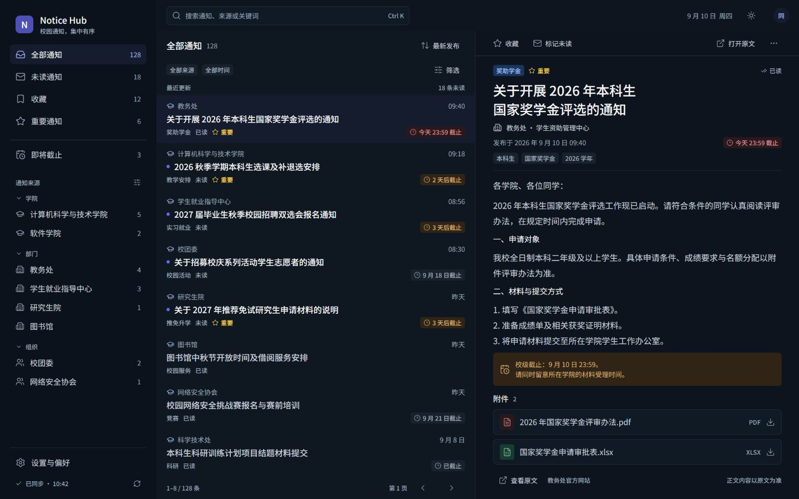
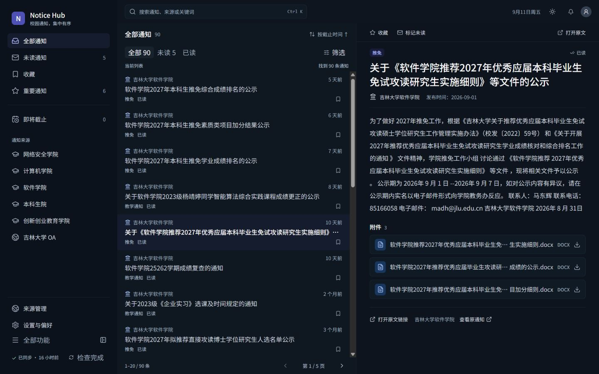
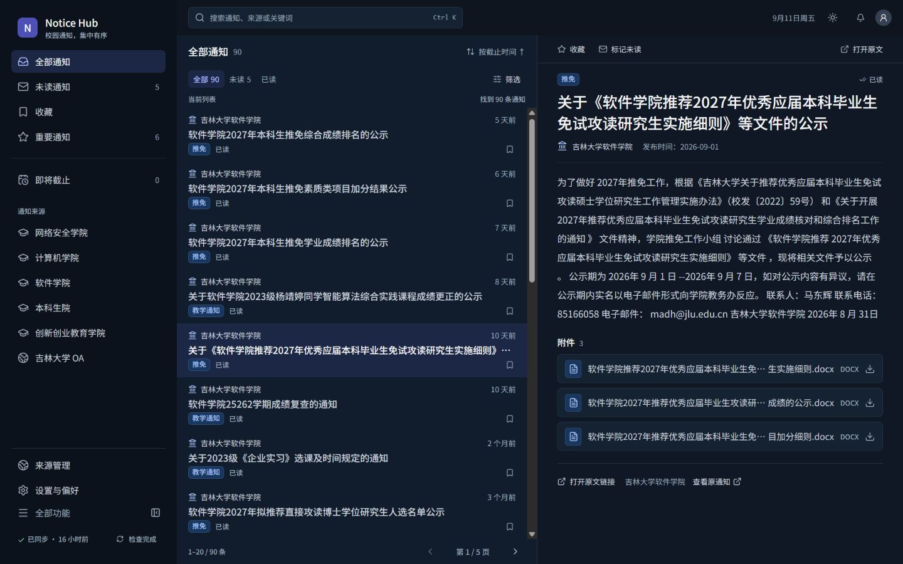
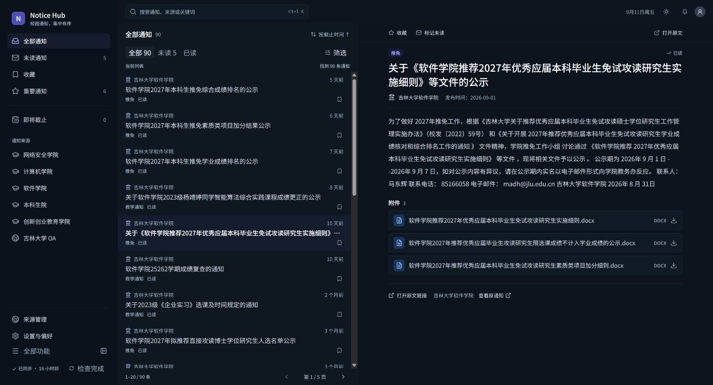
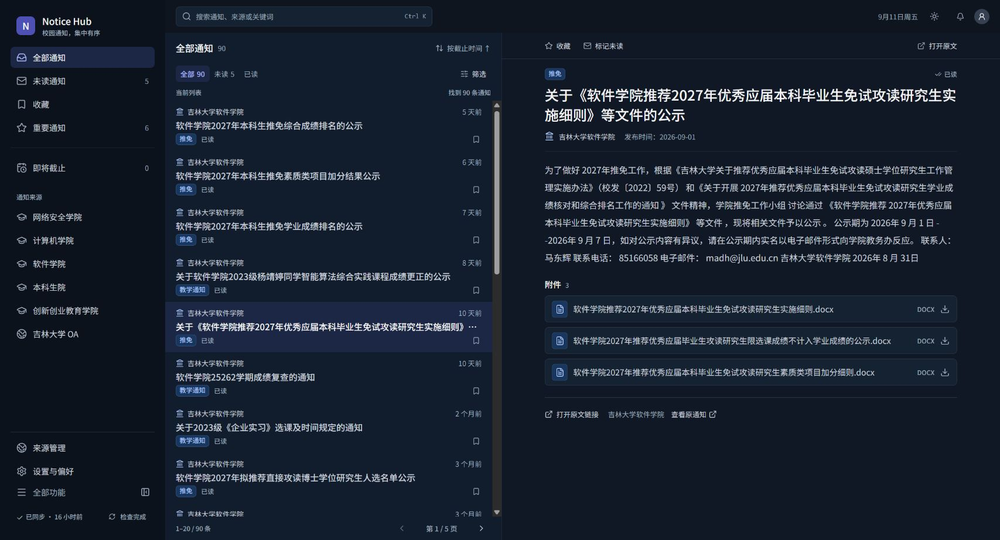
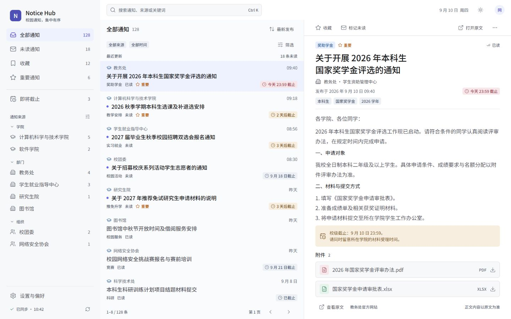
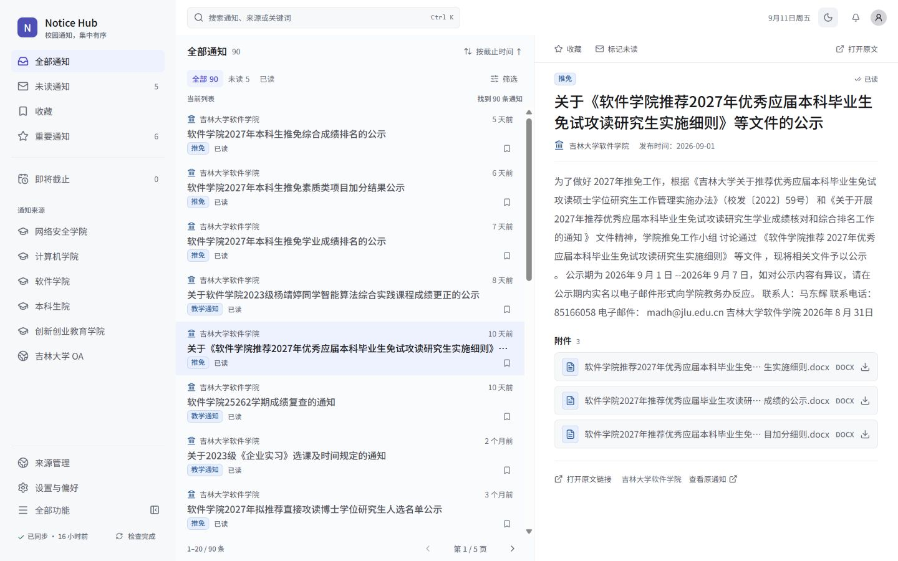
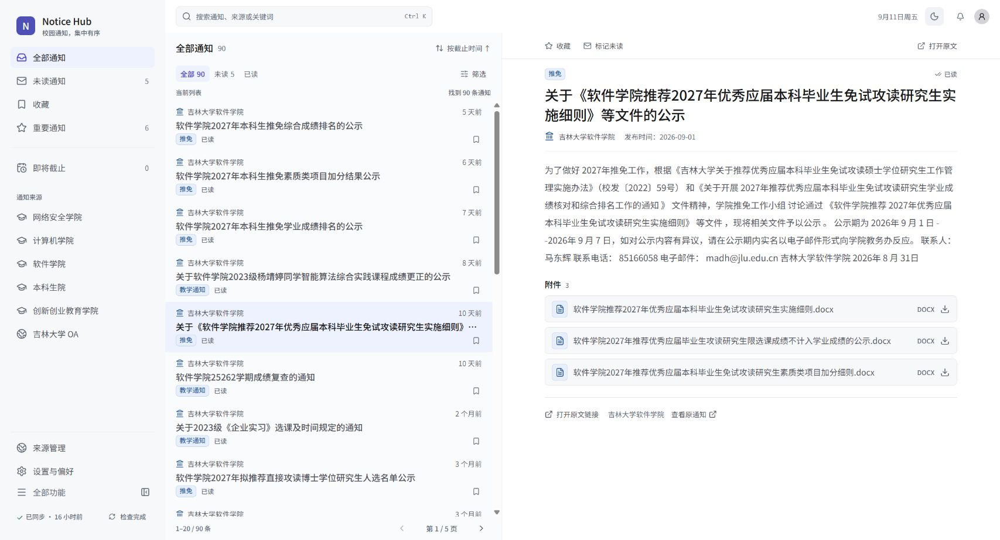
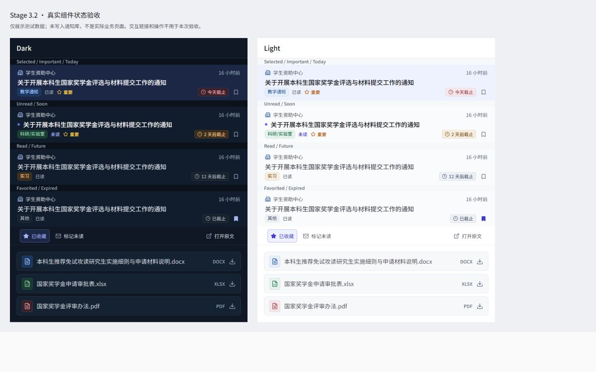

原始设计预览与真实通知 #90 对照。点击截图可打开原图。Dark保留同数据修复前后证据；Light没有本轮修复前截图，不重建历史画面。完整验收报告
本轮颜色、字阶与组件视觉验收 PASS；Stage3.1 的 #36 尺寸切换后双滚动条问题仍未闭环，不表示所有Reader问题已经关闭。



看区域层次、蓝紫选中、列表字重、紧凑筛选、来源与附件标识。真实通知没有Deadline，未为匹配预览补造。


沿用1440设计基准的结构；Toolbar、正文和附件仍共用宽屏阅读轴线。



此图来自内置浏览器，使用测试字段，未写入通知库。用于补齐Today / Soon / Future / Expired、重要、未读、收藏和不同附件类型；不是Chrome实际通知截图。
